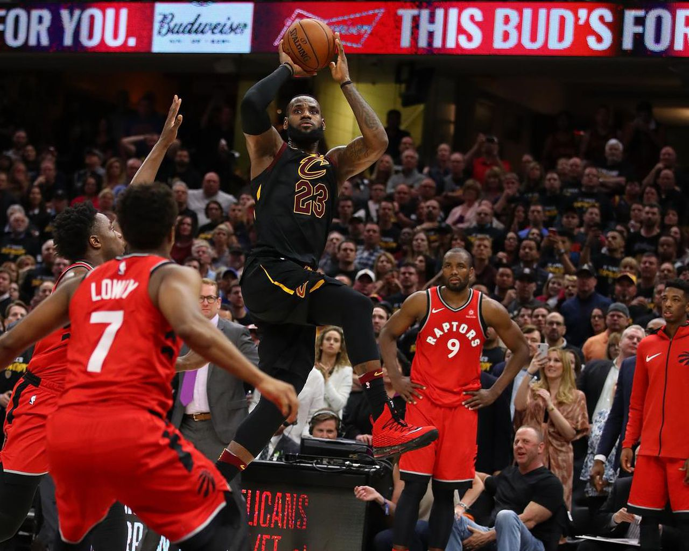

Bio
Nicknamed "King James", he is widely regarded as one of the greatest players in the history of the sport and is often compared to Michael Jordan in debates over the greatest basketball player of all time.
James is the all-time leading scorer in NBA history and ranks fourth in career assists.James grew up playing basketball for St. Vincent–St. Mary High School in his hometown of Akron, Ohio. He was heavily touted by the national media as a future NBA superstar for his all-around scoring, passing, athleticism and playmaking abilities.
Jump to the career achievements section below
Lebron's Top 3 Plays

With less than two minutes remaining in the deciding game of the championship series, Cavaliers forward LeBron James chased down Warriors forward Andre Iguodala and blocked his layup attempt, ensuring the game remained tied. It is considered to be one of James's greatest clutch moments
LeBron James hammered a monstrous dunk over Jason Terry, following which the Miami Heat extended its winning streak to 23 games in a row. James' slam soon became a social media sensation and also the cause of death on Terry's Wikipedia page.
LeBron James dominant spells against arguably every franchise in the NBA, his record against the Toronto Raptors has been particularly sublime over the years. As a result, the term 'LeBronto' was coined.
Teams that he has played for.
- Cleveland Cavaliers 2003-2010, 2014-2018
- Miami Heat 2010-2014
- Los Angeles Lakers 2018-Current
Career Achievements
- Four time NBA champion.
- Four time MVP.
- Thirteen time NBA All-Star.